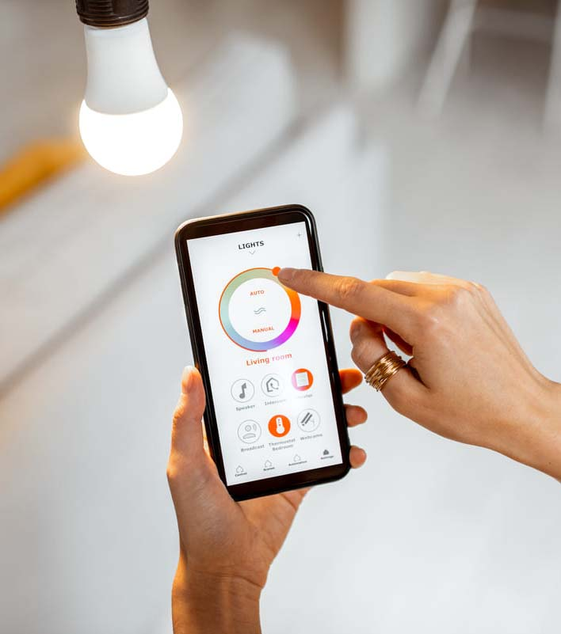

LÂMPADA INTELIGENTE
SÃO LÂMPADAS QUE PODEM SER CONTROLADAS POR MEIO DE UM DISPOSITIVO, COMO UM CELULAR. COM ESSE TIPO DE LÂMPADA, É POSSÍVEL SELECIONAR O FOCO DE LUZ, SUA INTENSIDADE E LIGAR AS LUZES MESMO SEM ESTAR NO AMBIENTE.
SÃO LÂMPADAS QUE PODEM SER CONTROLADAS POR MEIO DE UM DISPOSITIVO, COMO UM CELULAR. COM ESSE TIPO DE LÂMPADA, É POSSÍVEL SELECIONAR O FOCO DE LUZ, SUA INTENSIDADE E LIGAR AS LUZES MESMO SEM ESTAR NO AMBIENTE.
ESSE APARELHO É SIMILAR A UM ASPIRADOR DE PÓ, MAS DISPENSA A AÇÃO HUMANA DE SER LEVADO ATÉ O LOCAL ONDE SERÁ FEITA A LIMPEZA. AO SER LIGADO, O APARELHO SE MOVIMENTA SOZINHO PELO ESPAÇO E ASPIRA AUTONOMAMENTE AS SUJEIRAS DO CHÃO.
ESSA INVENÇÃO PERMITE ÀS PESSOAS SE LOCOMOVEREM DE CARRO SEM NECESSITAR DE UM MOTORISTA. O CARRO AUTÔNOMO É PROGRAMADO PARA SEGUIR O TRAJETO DEFINIDO PELO MOTORISTA.
ESSA FERRAMENTA DE INTELIGÊNCIA ARTIFICIAL FUNCIONA POR MEIO DE UM COMANDO DE VOZ E PODE SER LIGADA A OUTROS DISPOSITIVOS, INCLUSIVE LÂMPADAS INTELIGENTES, GELADEIRA E MICRO-ONDAS. ASSIM, É POSSÍVEL, POR EXEMPLO, OUVIR MÚSICA, PROGRAMAR UM ALARME E FAZER PERGUNTAS A UMA ASSISTENTE QUE SE CONECTA A MECANISMOS DE PESQUISA PARA OBTER AS RESPECTIVAS RESPOSTAS.